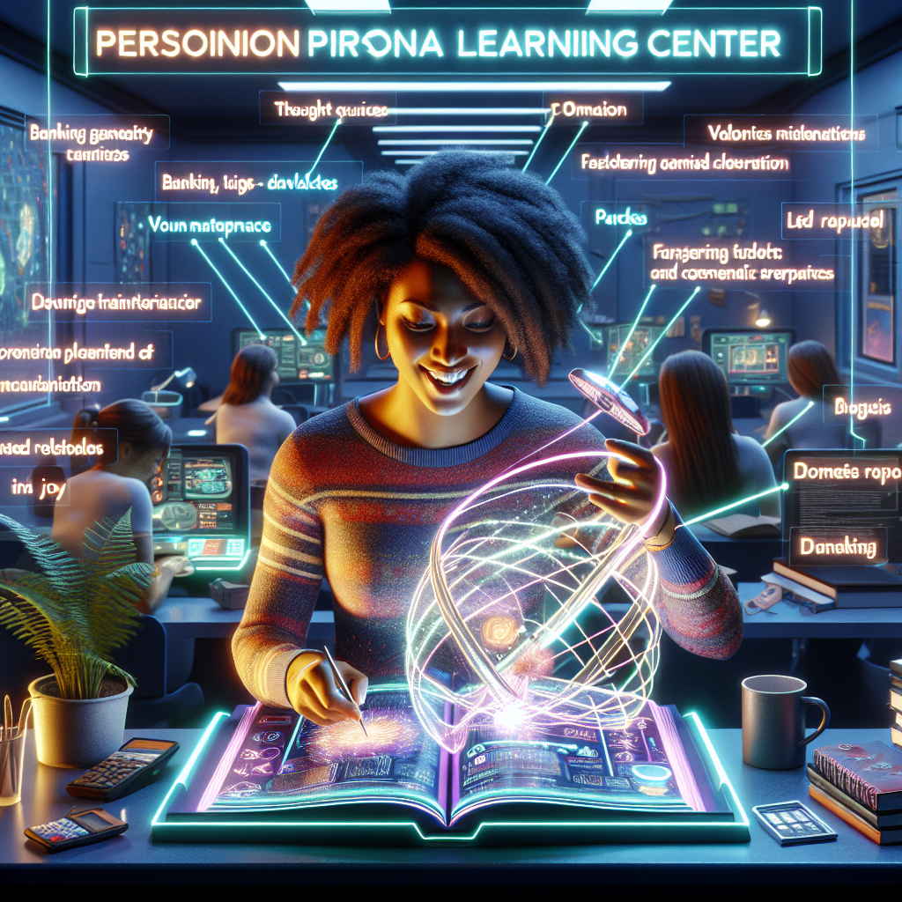
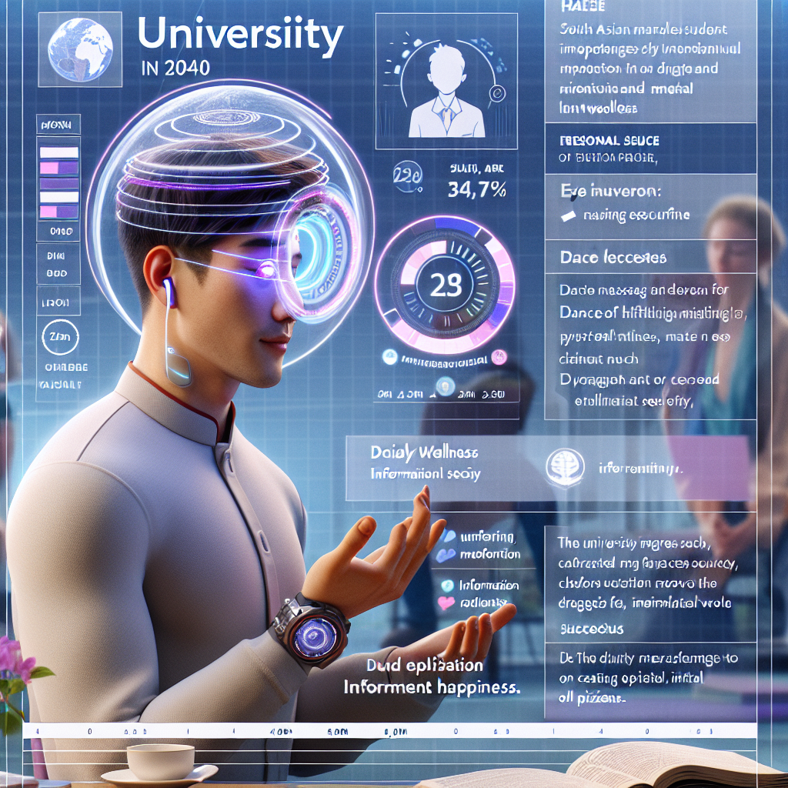

Discover bold, creative student-driven narratives for the future of higher education
SIGNALS
Indicators of emerging change, such as technologies, behaviors, or policies, that hint at potential futures.
TRENDS
Broader patterns or shifts over time that shape the trajectory of our educational landscape.
THEMES
Overarching ideas or concepts that tie together signals and trends, reflecting key values or goals.
This site showcases a collection of student-directed visions for the future of higher education in 2040. Using your responses to a series of thought-provoking questions, we’ve generated compelling storylines and imagery that illustrate potential pathways education might take in the decades to come.
Each story identifies key signals, trends, and themes that suggest how these imagined futures could become reality. Whether you’re exploring these futures for inspiration, curiosity, or insight, you’ll discover how today’s choices shape point towards the possibilities of tomorrow!
Kimberly's Storyboard Entry

The sun radiantly shines on the personal learning center of Kimberly at the University of the Future, her enlightening journey towards a personalized, passion-driven education just beginning. Her workspace is full of innovative gadgets - the Thought Pioneer, a next-generation tool, crowns them all. The tech marvel brilliantly transforms her ideas into coherent, well-articulated dialogues, supplementing her challenge with communicating intricate thoughts. Kimberly is currently engrossed in working on her real-life skills module, mastering topics she once wished were taught in her primitive high school - from banking and taxes, to practical life skills like vehicle maintenance and domestic repairs. A light-up jump rope, one of her ingenious concepts, delights her eyes with splendid images created through the persistence of vision light theory, alluding to doubts about her available time a relic of history.
Traditional grading systems gave way to a redefined notion of success in this future education model, with progress measured through a gamified system. There's no pressure of timelines, no fear of failing based on a predetermined schedule. Kimberly earns points for each mastered skill - be it python coding or understanding the workings of a Raspberry Pi sensor - with progression to the next stage only when she has amassed sufficient points. This personalized, self-paced learning track puts her in control of her education, wresting power away from the confining structures of traditional classrooms. Kimberly, like her fellow students, enjoys the freedom to learn at her pace, her success hinging on dedication and work ethic, not rigid timeframes or conventional GPAs.
However, as promising as this learner-centric model may seem, it comes with its unique set of challenges. The Thought Pioneer tool, though revolutionary, might face ethical debates on thought privacy and digital security - a major concern of Kimberly's. There also remains the question of effective collaboration, a crucial twenty-first-century skillset in the deeply digital era. With the initiative's present orientation towards individualized pursuits and academic independence, developing a supportive and interdependent community within the framework might be a tough nut to crack. Regardless, the utopian sight of students passionately delving into their life-quest with joy breathes a new aura into higher education, with hopes that the minor hitches can be ironed out as the journey progresses. The future of education is here, and it's exciting.
SIGNALS
1. Advancements in AI-based Tools: The development of AI chatting tools and software such as GPT-3 have gained significant popularity over the past few years. These can generate human-like text and can be programmed to transform user ideas into well-articulated dialogues, mirroring the capabilities of the Thought Pioneer described in the narrative.
2. Digital Learning Platforms: Companies like Khan Academy, Coursera, and EdX offer a range of online courses that allow for self-paced learning. These platforms provide practical courses on topics that are neglected in traditional curricula, from Python coding to entrepreneurship, aligning with Kimberly’s ability to choose and master real-life skills at her own pace.
3. Gamification in Learning: The introduction of gamified systems in learning is a recent trend aimed at making education more engaging. For example, Duolingo has gamified language learning by setting bite-sized lessons and giving rewards. The point system for each mastered skill in the narrative resonates with this form of learning.
4. Concerns of Digital Privacy and Security: The rise in digital learning and use of AI utilities have brought up significant ethical debates regarding digital security and privacy. For example, student surveillance tools used during the pandemic for remote examinations faced considerable ethical backlash, much like the dilemmas Kimberly has with the Thought Pioneer tool.
TRENDS
Over the last five years, there has been a growing shift towards personalized, learner-centric, and self-paced education models globally. Traditional models focus on mass instruction with rigid structures and timeframes have been increasingly scrutinized for their limited ability to cater to individual learning styles and interests, inhibiting the fosterage of creativity, critical thinking, and problem-solving skills. In response, educational models focusing on passion-driven and real-life skills learning have emerged, aiming to make education more relevant to students' lives and future professions. This paradigm shift is reflected in Kimberly's 2040 scenario, where her education is individualized, flexible, and mastery-based rather than timebound.
In addition, there is an increasing adoption of technology in education, leading to the development of innovative learning tools like the Thought Pioneer. These tools, aided by AI and VR technologies, aim to enhance learning experiences by providing interactive and immersive environments, aiding the transformation of complex ideas into comprehensible formats. However, increased digital usage for educational purposes does raise concerns regarding data privacy and security, signifying a crucial trend to monitor carefully.
The growing emphasis on soft skills, such as collaboration, in the 21st-century job market has steered academic focus towards developing these abilities. Digital learning often includes collaborative tools; however, striking a balance between individual and collaborative learning in a predominantly digital environment, as underscored in Kimberly's narrative, in itself poses a significant challenge. It is indicative of the modern struggle in education – ensuring technological advancements don't hamper necessary human interaction and skill development.
Finally, the drive towards gamification of education, evident in the point system Kimberly's model follows, is a significant trend. It aims to increase student engagement, motivation, and retention by making learning a more interactive and enjoyable process. These changes all have critical implications for the future of education, demanding adaptations in teaching methods, curriculum design, and educational policies.
THEMES
Several overarching themes emerge from the narrative that envision future education in 2040. Firstly, the concept of personalized and passion-driven education is a dominant theme. It reflects a shift from traditional, rigid learning systems to learner-centric education where individuals, like Kimberly, can focus and excel on their core interests and relevant real-life skills, ranging from sophisticated technologies to basic life skill sets.
Secondly, the narrative draws heavily on the theme of technology-enabled education, with gadgets like the Thought Pioneer enabling learners to articulate their complex ideas effectively. The emphasis on technology also extends to tech skills like Python coding and working with Raspberry Pi sensors.
Thirdly, the gamified system of measuring educational progress is another significant theme. In this context, success is not based on conventional grading parameters, but rather on the accomplishment of mastered skills and individual work ethics, empowering students to learn at their pace without fear of time-bound evaluations.
The narrative also raises concerns that suggest the themes of privacy and digital security, as well as challenges to effective collaboration in a potentially solitary, digitally-enabled education system. Lastly, the overall narrative reflects a spirit of optimism and anticipation towards the evolving landscape of education. It stresses the evolving challenges as potentials for further growth and improvement, pointing to the future's exciting prospects.
Duorfan's Storyboard Entry

In the year 2040, Duorfan soaks in the morning dawn, ready to embrace another vibrant day at his forward-thinking university. His education is varied and unique; from courses exploring the interconnected nature of dance and meditation, to passion-driven projects aimed at promoting mental well-being in contemporary society. His mornings often start with physical movement, as he believes in the harmonious union of body and mind. After an invigorating dance session, he dons a pair of translating eye contacts given by his linguistics' mentor. These astounding pieces of technology allow him to converse with peers worldwide in an array of languages, nurturing an environment rich in diversity and cross-cultural understanding. This inclusive technology breaks barriers, fostering intellectual growth and empathy among classmates.
For Duorfan and his peers, success is not defined by abstract grades or passing tests, but by personal growth and the satisfaction derived from meaningful contributions. In this 2040 education model, success is measured by how often he declares, "I'm happy today." As classes progress, Duorfan perceives his growing ability to process and interpret complex data, increasing creative thinking, and a deepened emotional intelligence. An intuitive digital portfolio keeps track of his acquired skills across a range of disciplines, mapping the trajectory of his continually expanding knowledge base. Over time, Duorfan realizes the value of education not just as a means to a job, but as a journey to understanding himself and how he fits into the ever-changing world around him.
Influencing the world for the better is a motivating goal at the heart of this future sustainable education system. Global warming, for instance, pervades as a persistent concern. Duorfan applies his consistently evolving capabilities to this problem, creating cross-disciplinary proposals targeted at reducing global emissions. The impact of his education then transcends personal development, playing a transformative role in the wider community and world in general. However, not every path is smooth; the reliance on technology raises questions about information security and privacy. The necessity for refining soft skills, amidst a data-driven society, also remains a contentious issue. Yet, irrespective of the challenges, Duorfan continues his journey on this exciting educational journey, firmly grounded in the belief that education's ultimate purpose is not mere academic prowess but nurturing compassionate, thoughtful international citizens.
SIGNALS
1. Advancement of Language Translation Technology: Google released its Pixel Buds in 2017 that come with real-time translation ability for a number of languages. This idea has resonated in the narrative with the translation eye contacts, demonstrating a clear evolution of instant translation technology and its applicability in global education.
2. Emergence of Holistic Education Models: Radical EdTech companies like Holberton School, which started in 2016, strive to break the traditional grading system and focus more on personal growth and skills development. Like the model described in the narrative, they emphasize on project-based and peer-led learning, aligning with the concepts of personal growth and satisfaction derived from meaningful contributions.
3. Presence of Digital Portfolios: LinkedIn launched its 'Skill Assessments' feature in 2019, allowing professionals to validate their skills and boost their profiles. This directly parallels with Duorfan's intuitive digital portfolio that maps the trajectory of his expanding knowledge base, indicating a trend toward the use of technology to track and exhibit educational and professional achievements.
4. Rise of EdTech for Cross-disciplinary Learning: Interactive platforms like Piazza (founded in 2009 and increased usage in recent years) provide a space for students around the world to collaborate on various subjects. They allow for interdisciplinary discussions, much like the cross-disciplinary ideas seen in Duorfan's approach to problem-solving global warming. These platforms reflect the trend of using technology to facilitate collaborative, cross-disciplinary learning.
TRENDS
Several contemporary trends can be discerned from this narrative, indicating potential societal and educational shifts within the next two decades. The first trend identified is that of blended learning experiences, integrating physical, cognitive, and emotional development. Incorporating physical activities alongside conventional studies can be viewed as an advancement in the growing awareness of holistic education models emphasizing wellbeing, spurred in the present day by increased instances of student stress, anxiety, and other mental health issues. In a parallel vein, the narrative hints at increased personalization and student-centric pedagogy, where learning is not just about passing exams but also about developing emotional intelligence and fostering the essence of happiness. This marks a shift from traditional education systems towards more progressive methods that encourage learners to understand themselves and their roles in a broader societal context.
Another key shift suggested by the narrative is the greater use of technology in education. With the proliferation of digital technology in recent years, we can anticipate advancements in learning methods and tools. The mention of translating eye contacts is indicative of this trend, predicting a future where language barriers are virtually eliminated, hence enabling a diverse learning environment that fosters cross-cultural understanding. Increased reliance on technology, however, also brings challenges about data privacy and security.
Interestingly, the narrative also comments on a broader societal trend — the pressing issue of global warming and the need for sustainable practices. This reflects a shift, increasingly evident over the last five years, in public discourse towards ecofriendliness and sustainability. The implication for educational institutions would mean encouraging students to apply their skills and knowledge toward solving real-world problems, thereby producing thoughtful citizens dedicated to global betterment.
Finally, the downside of a data-driven society is recognized, revealing a heightened awareness of the importance of interpersonal and soft skills, even as digitization looms large. This reflects recent concerns about the impact of automation on future job markets and stresses the lasting essence of human skills in a rapidly changing world.
In sum, the 2040 envisioned scenario clearly portrays a likely education system influenced by progressive pedagogies, digital technology, sustainability concerns and the pressing need to preserve human skills amidst technological ease.
THEMES
In this envisaged 2040 education scenario, few significant themes can be pointed out: Firstly, the theme of "Holistic and personalized Education" is prominent. The education system pays attention to the all-around development of students, focusing not just on their intellectual capacity but also their emotional, mental, and physical well-being. The educational process is uniquely tailored to the individual's interests and passions. Another theme is "Technological Integration and Global Collaboration," where technology is extensively harnessed to enhance learning and facilitate intercultural understanding and cooperation. With the help of technology, educational barriers are broken down, increasing cross-cultural dialogue and intellectual growth. "Redefining Success and Continuous Learning" is another theme. The traditional notions of success, such as achieving good grades, are redefined. Instead, personal growth, happiness, and making socially meaningful contributions take the center stage. Learning becomes a life-long process, constantly updating and broadening knowledge and skills. Lastly, "Sustainability and Ethical Responsibility" is a significant theme. The future education system strongly emphasizes the use of education for social transformation and solving global challenges such as global warming. Despite difficulties like issues of privacy, the overall emphasis of this future education system remains the cultivation of empathetic, responsible, and global-minded citizens.